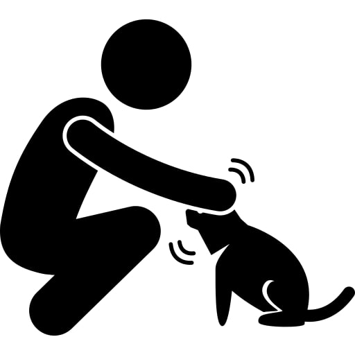
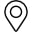
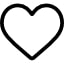
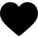
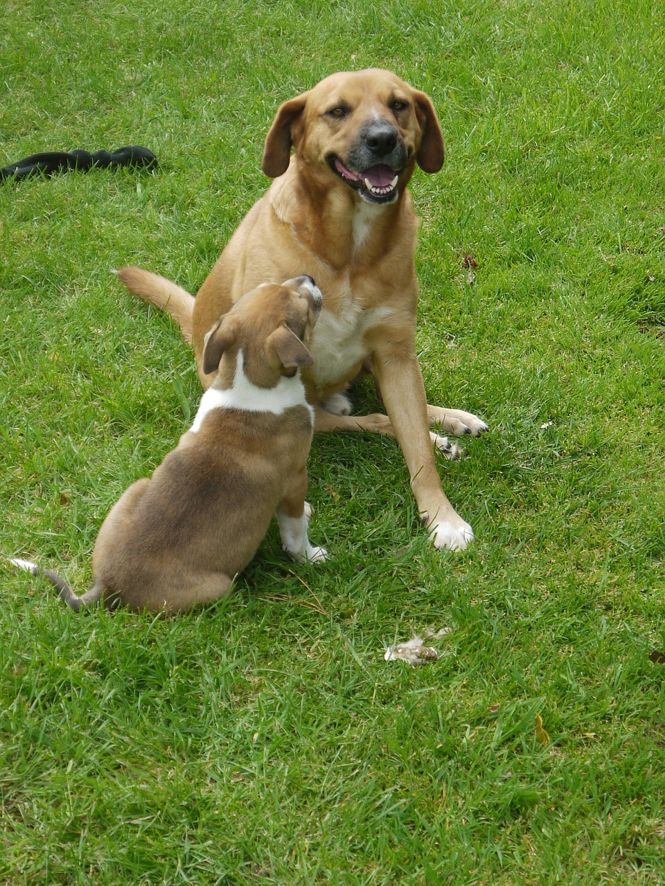
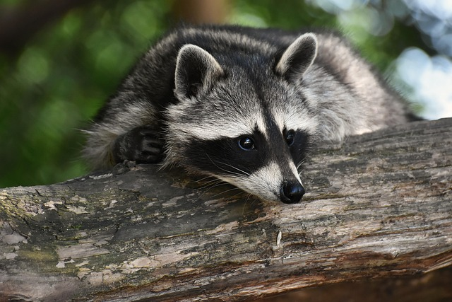

Crediti e ringraziamenti
-

Persona che accarezza un gatto -

Simbolo GPS
Location icons created by Vitaly Gorbachev - Flaticon
-

Icona di un cuore senza riempimento
Heart icons created by Freepik - Flaticon
-

Icona di un cuore con riempimento
Heart icons created by Freepik - Flaticon
-
 Foto di cani numero 1
Foto di cani numero 1 -

Foto di cani numero 2 -
Icona usata per segnalare un contenuto non trovato
Exist icons created by Three musketeers - Flaticon
-

Immagine di un procione